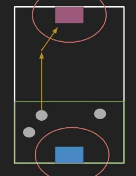

For more details, please refer to Soul of Eden.
．Simplify the game
The original game is complicated. Since our main
goal is to show our AI’s
feasibility, we simplify the game.The simplified game is as following.
．Destory the opposite’s castle
In the given time, players need to
destory the opposite’s
castle. The one who destroy the opposite’s castle wins the game.
If none of the castles is destroyed in the time limits, the game is considered to be draw.
．Game Cards
There are 3 kinds of cards in the game.
For every 4 seconds, each player should choose one kind of cards to play.
After playing 30 cards, the players stop playing cards and wait for the final result.

240 seconds
30
2800HP
Medium Attack power
Fast Attack speed.
621HP
Low attack damage
Block the attack from the enemy’s archer
162HP
Medium attack damage
The main attacker in the game,
usually protected by tanks
162HP
High attack damage
Assassinate enemy archers.
Each player choose a type of card to play every 4 seconds.
Each player should stop playing cards after 120 seconds.
The game continues until one of the castles is destroyed or the time limit exceeds.
Destroy the enemy’s castle.
If none of the castles is destroyed in the time limit, the game is considered to be draw.
3 kinds of cards we can use and 25 positions we can put.
-> Therefore, a behavior $b$ is formed by the card we use and the position we put.
Denote $c \in \{0,1,2\}$ as the card and $p \in \{0,1,...,24\}$as the position.
$b = 3 \times c + p$, $b \in \{0,1,2,...,74\}$.
We then use $b$ as the format of our training data.
We let statistics model and random model play over 3,000 games and the statistics model have more than 80%
winning rate, meaning that it is superior than the random model very much.
We let RNN models play with the statistics model. Both of the models choose the best behavior they think as the decision, and therefore the game is deterministic. The result is that all of the RNN models defeat the statistics model, showing that RNN models are better than statistics model.
We also let the two versions of RNN models play with each other. The result shows that their winning rates are nearly equal.
In the RNN model, we can decide the number of layers to stack the cells. Here we choose 2 and 4. The training curve is like the graph.
The statistics model performs better than random model, and the RNN models outperforms the statistics model.
Version 1 and version 2 RNN models have similar performance.
The model that uses 4 layers of cells leads to a lower loss than the model that uses 2 layers of cells.
Since we have some basic models now,we can use them to generate training data that has higher quality.
We believe that the model could perform better if we use higher quality data.
In version 2 of RNN model, we can try to use more complicated mapping method to map the 2 inputs into a vector. Maybe the version2 does not work well since the mapping is too easy.
Wei-Chung Liao
B02902105@ntu.edu.tw
Chun-Wei Chen
B02902063@ntu.edu.tw
Po-Yao Chen
B02902071@ntu.edu.tw